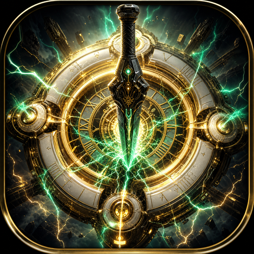

IP-posisjon
Veiledende porteføljeverdi 2,0 mill. NOK ved live co-op + App Store-klar build — 3D TPS med egen IP, ikke white-label.
Spill-IP · iOS · Estimert verdi 2,0 mill. NOK
Native 3D third-person zombie co-op — Call of Duty-inspirert loop med wall buys, Pack-a-Punch, mystery box og delt horde for opptil fire spillere. Bygget i Godot 4, eksportert til iPhone og iPad med Sign in with Apple, Game Center og online rom.

Spillopplevelse
Start med 500 pts. Tjen poeng på hit, kill, headshot og melee. Kjøp våpen fra veggen, åpne debris, slå på strøm, Pack-a-Punch og overlev waves som skaleres til 100+ runder — med CoD-klassiske power-ups: nuke, insta-kill, double points og MAX AMMO.
Grafikk & presentasjon
Chrono Blade er ikke en flat 2D-klone — det er en full 3D TPS med egne verdener, våpen-meshes og en CoD-ren kamp-HUD.
App-ikonet — det forgylte urverket med grønn chronoblade-energi — setter tonen: tid, metall og raw power. Samme kontrast går gjennom hele spillet: mørke arenaer, lesbare silhuetter, og feedback som føles dyrt uten å drukne mobilskjermen i clutter.
Ti handcraftede GLB-arenaer — fra åpne bylandskap til tette indoor-korridorer. Utendørsbaner som New York, Polygon, Circus, Western, Junction og Lviv bruker åpen himmel, gateplan og skyline for dybde. Indoor-baner (Warehouse, Skyscraper, Jailhouse, Garage) bruker trimesh-kollisjon, etasje-logikk og material-fix slik at gulv, trapper og tak føles solide — ikke «floating plate»-demoer.
Lviv er spesielt: en stor OSM-inspirert byskala der bygningshøyde — ikke kilometerlange ground-plane AABB — styrer fit. Resultatet er gater spilleren kan lese, ikke en miniatyr-diorama.
Arsenalet er low-poly / mid-poly GLB-våpen med tydelig silhuett på mobil: pistoler (VP9), SMG-er (TEC-9, UMP40, PDR-C), shotguns (Serbu, Mossberg), rifler og sniper-linjen (M14, VSS, SVD, OSV-96, Leader .50) opp til wonder-tier Cyborg. Wall buys, mystery box og Pack-a-Punch gir progresjon som ser ut — ikke bare tall i UI.
Hold-poses (pistol vs rifle), recoil, spread og pellet-count er våpenspesifikke. Magasin, reserve og auto-reload er hardnet slik at MAX AMMO og reload føles som CoD — ikke et bug-fest.
Zombies og soldiers er 3D-enheter med AI, melee-range og wave-math basert på klassisk CoD-økonomi (HP, count, speed per round). Indoor-deteksjon, outdoor spawn-preferanse og wave-stall rescue (yank / mercy-kill) sørger for at «2 LEFT» ikke henger for alltid i veggen — kritisk for både solo og co-op-troverdighet.
Kamp-HUD er bevisst sparsom: HP, wave, minimap, pts, våpen/ammo og fire. Threat-arrows er av som default. Combat callouts går i én kanal. Scoreboard kommer ved nederlag — ikke midt i fighten. Målet er lesbarhet på iPhone i landskap, ikke «dashboard over bildet».
Arenaene kombinerer bake/realtime-følelse med mobile budsjetter: skygger, FXAA/MSAA-tilpasning via display-tier, og power-up / nuke-feedback som gir punch uten å smelte batteriet. App-ikonets grønne lyn og gull-urverk speiles i power-on, PAP og power-up-øyeblikk — merkevare i spilløyeblikket, ikke bare i butikklisting.
Online co-op
Host-authoritative zombies, delt debris/power/mystery, pose-sync via Supabase Realtime med REST-fallback. Room codes, Game Center-venner og push-invites — opptil fire operators i samme siege.
Campaign
Clear, Elite Hunt, Precision, Blitz, Survive, Boss Slay, Weapon Trial og mer — med unlock av våpen og meta-progresjon. Kart roterer gjennom de ti verdene etter level.
Veiledende porteføljeverdi 2,0 mill. NOK ved live co-op + App Store-klar build — 3D TPS med egen IP, ikke white-label.
Godot 4.7 · native iOS
Supabase Realtime
Spill-IP · Norge
Det som gjør Chrono Blade til et komplett produkt — ikke en prototype.
Teknologi